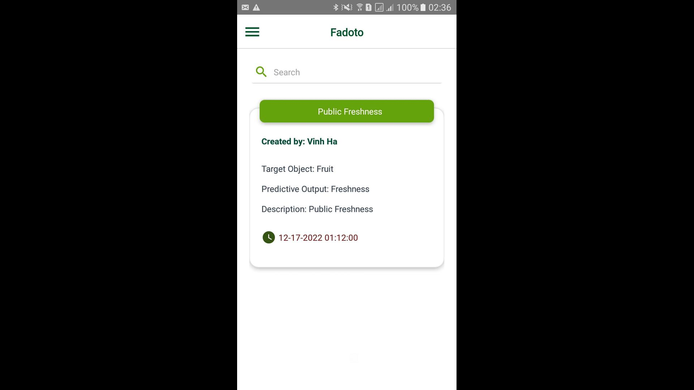
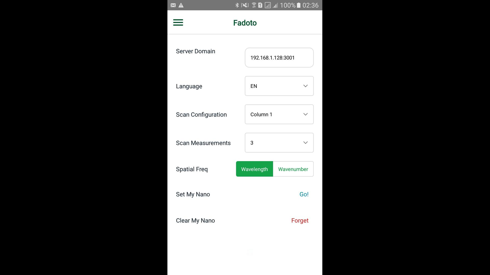
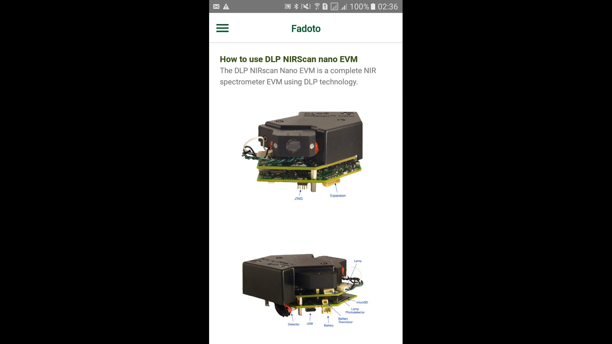
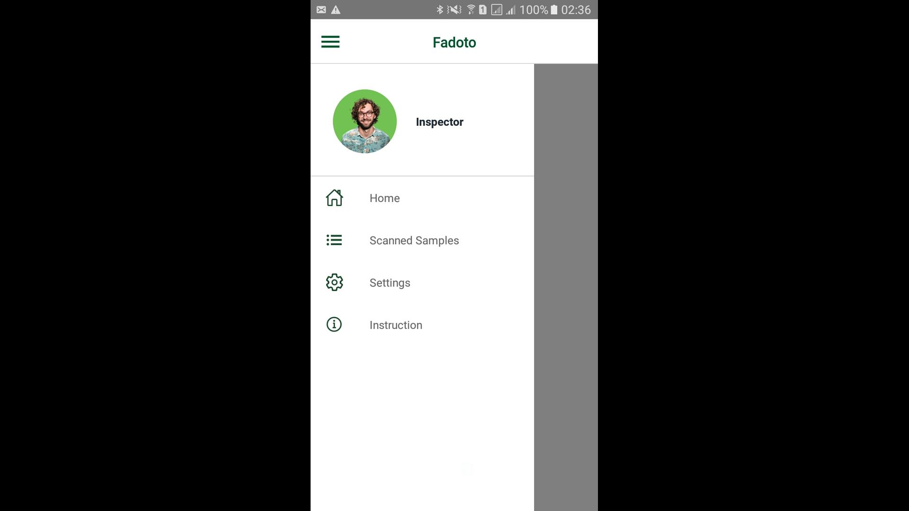
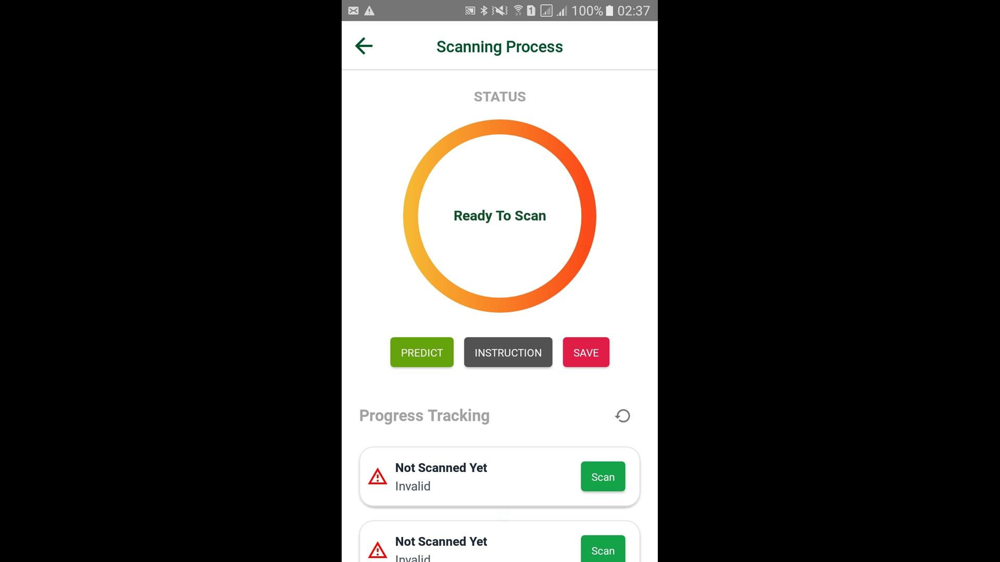
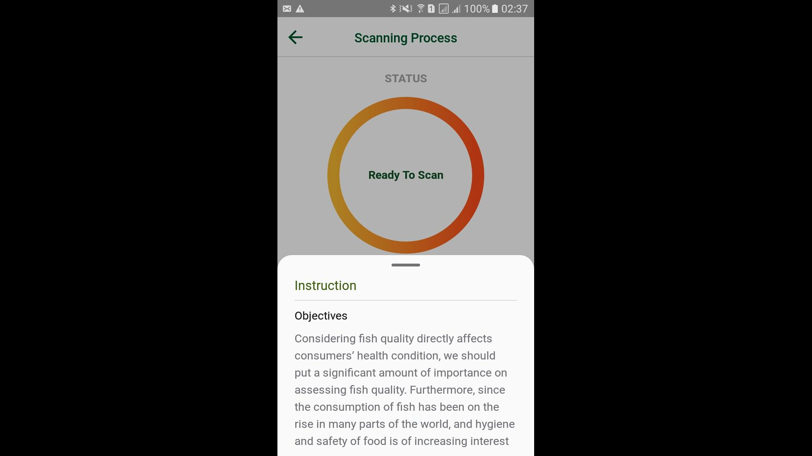
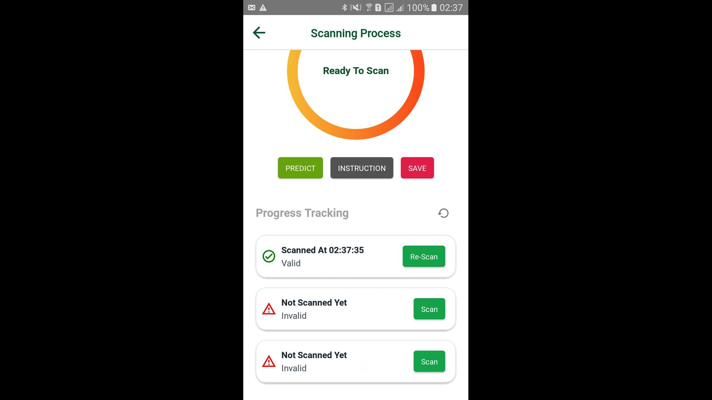
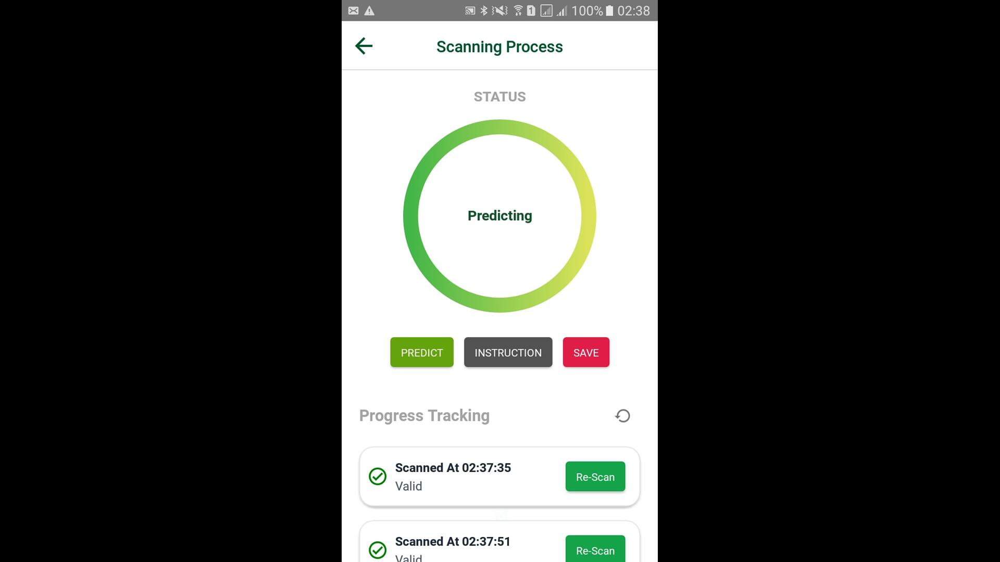
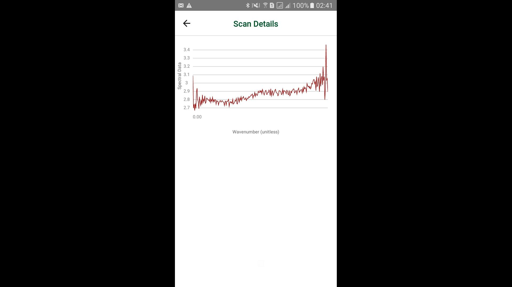

Data Acquisition and Analysis System for Near-infrared Spectrum of Food

Innovated a holistic solution for acquiring and analyzing near-infrared spectral data in the context of food quality assessment. The project includes the following key components:

Developed an Internet of Things (IoT) system capable of capturing near-infrared spectral data. Implemented advanced sensors and devices to ensure precise and reliable data acquisition.

Designed algorithms and analytical tools for in-depth analysis of the acquired near-infrared spectral data. Employed statistical and machine learning techniques to derive meaningful insights regarding food quality parameters.

Created a mobile application to facilitate seamless interaction with the IoT system. Utilized React Native, a cross-platform framework, to ensure compatibility with both Android and iOS devices.

Established a connection between the mobile application and the Texas Instruments Nirscan Nano spectroscopy Evaluation Module. Leveraged Bluetooth Low Energy (BLE) technology for efficient and low-power communication.

Ensured the mobile application is compatible with both Android and iOS platforms. Utilized React Native's capabilities to streamline the development process, enabling a unified user experience across different devices.

Designed an intuitive and user-friendly interface for the mobile application, allowing users to interact seamlessly with the system. Provided features for real-time data visualization, parameter adjustments, and quality assessment results.

Aligned the project with the overarching goal of assessing and ensuring the quality of food products. Enabled stakeholders in the food industry to make informed decisions based on the analyzed spectral data.

Designed the system with scalability in mind, allowing for potential expansion and integration with additional sensors or modules. Provided flexibility for customization based on specific requirements and types of food being analyzed.
